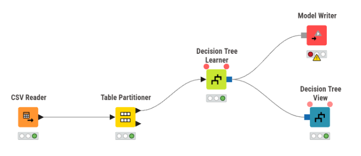
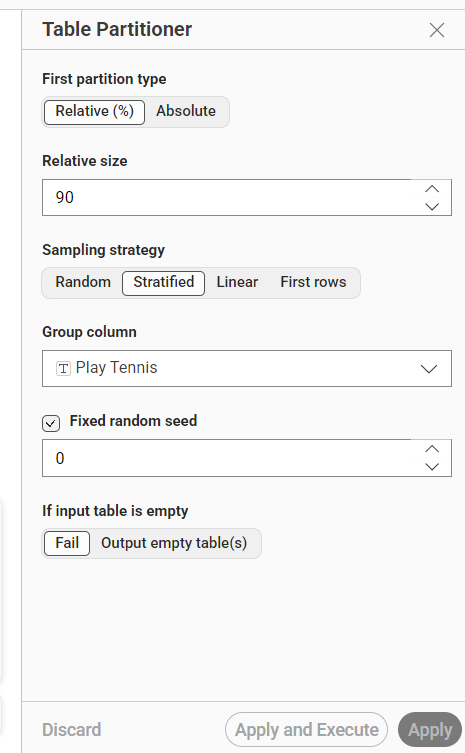
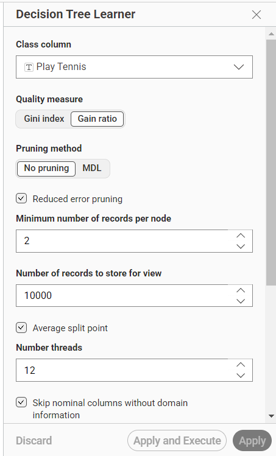
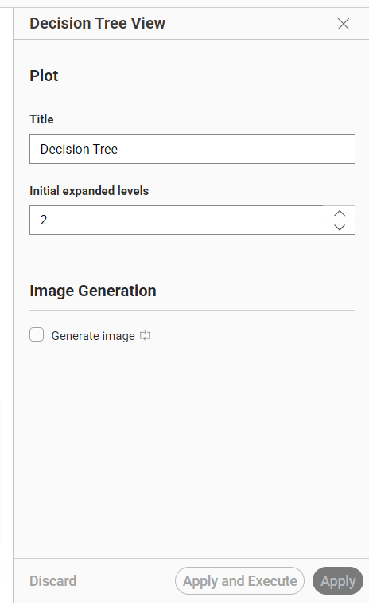
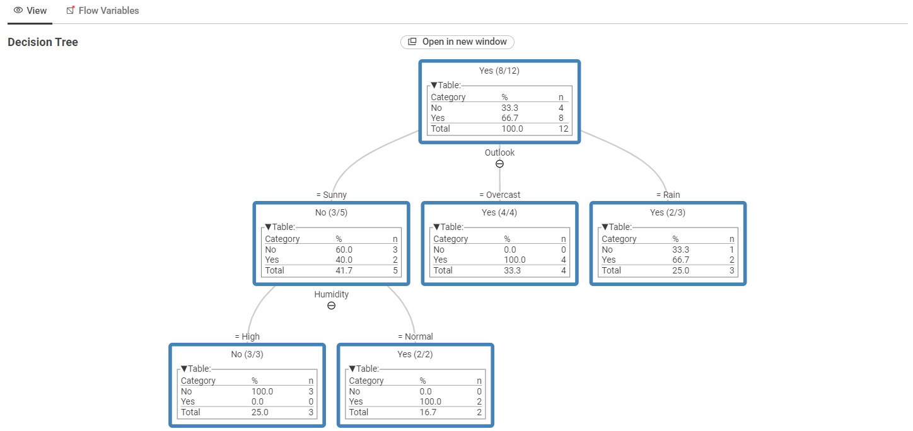

Pertemuan 11#
Decision Tree#
1. Pengertian Decision Tree#
Decision Tree atau pohon keputusan adalah salah satu algoritma klasifikasi yang bekerja dengan cara membagi data berdasarkan atribut tertentu hingga menghasilkan keputusan akhir. Bentuk modelnya menyerupai struktur pohon, yang terdiri dari akar, cabang, dan daun.
Pada Decision Tree, setiap node digunakan untuk menguji suatu atribut, setiap cabang menunjukkan hasil dari pengujian atribut tersebut, dan setiap leaf node atau daun menunjukkan hasil keputusan atau kelas akhir. Algoritma ini mudah dipahami karena proses pengambilan keputusannya dapat divisualisasikan secara langsung.
Dalam proyek ini, Decision Tree digunakan untuk melakukan klasifikasi pada dataset Play Tennis. Kolom target yang digunakan adalah Play Tennis, yaitu kolom yang menunjukkan apakah permainan tenis dapat dilakukan atau tidak berdasarkan kondisi cuaca tertentu.
2. Konsep Dasar Decision Tree#
Decision Tree membuat keputusan dengan membagi data ke dalam beberapa kelompok berdasarkan atribut yang paling berpengaruh terhadap kelas target. Pemilihan atribut dilakukan menggunakan ukuran kualitas tertentu, seperti Gini Index atau Gain Ratio.
Pada proyek ini, ukuran kualitas yang digunakan adalah Gain Ratio. Gain Ratio digunakan untuk menentukan atribut terbaik yang akan dijadikan sebagai pemisah atau root pada pohon keputusan.
Rumus Gain Ratio#
Gain Ratio dihitung dengan membandingkan nilai Information Gain terhadap Split Information. Rumusnya adalah sebagai berikut:
Gain Ratio(S, A) = Gain(S, A) / SplitInfo(S, A)
Untuk memperoleh nilai Gain Ratio, terlebih dahulu dihitung nilai Entropy dan Information Gain.
Rumus Entropy:
Entropy(S) = - Σ pi log2(pi)
Rumus Information Gain:
Gain(S, A) = Entropy(S) - Σ (|Sv| / |S|) x Entropy(Sv)
Rumus Split Information:
SplitInfo(S, A) = - Σ (|Sv| / |S|) log2(|Sv| / |S|)
Keterangan:
S: seluruh data yang digunakan.
A: atribut yang diuji untuk membagi data.
Sv: subset data berdasarkan nilai tertentu pada atribut A.
pi: proporsi data pada kelas ke-i.
|Sv| / |S|: perbandingan jumlah data pada subset terhadap total data.
Atribut dengan nilai Gain Ratio tertinggi akan dipilih sebagai atribut terbaik untuk membentuk percabangan pada Decision Tree.
3. Struktur Decision Tree#
Struktur utama pada Decision Tree terdiri dari:
Root Node
Node paling awal atau akar dari pohon keputusan. Root node berisi atribut pertama yang digunakan untuk membagi data.Internal Node
Node yang berada di tengah pohon dan digunakan untuk melakukan pengujian terhadap atribut lain.Branch
Cabang yang menunjukkan hasil dari pengujian suatu atribut.Leaf Node
Node akhir yang menunjukkan hasil keputusan atau kelas prediksi.
4. Kelebihan Decision Tree#
Beberapa kelebihan algoritma Decision Tree adalah:
Mudah dipahami dan divisualisasikan.
Dapat digunakan untuk data numerik maupun kategorikal.
Proses pengambilan keputusan dapat dilihat secara jelas.
Tidak membutuhkan proses normalisasi data.
Cocok digunakan untuk menjelaskan pola keputusan dari sebuah dataset.
TUGAS#
Laporan Proyek: Klasifikasi Decision Tree Menggunakan KNIME#
5. Deskripsi Proyek#
Proyek ini bertujuan untuk membangun model klasifikasi menggunakan algoritma Decision Tree pada platform KNIME. Dataset yang digunakan adalah dataset Play Tennis, yaitu dataset yang berisi beberapa kondisi cuaca untuk menentukan apakah seseorang dapat bermain tenis atau tidak.
Kolom target pada proyek ini adalah:
Play Tennis
Kolom Play Tennis berisi kelas keputusan, yaitu:
YesNo
Tujuan dari proyek ini adalah membuat model Decision Tree yang mampu membentuk aturan keputusan berdasarkan data yang tersedia. Model ini kemudian divisualisasikan dalam bentuk pohon agar proses pengambilan keputusan dapat dilihat dengan jelas.
6. Visualisasi Workflow#

Gambar 1. Workflow klasifikasi Decision Tree menggunakan KNIME.
Langkah-Langkah Pembuatan Workflow#
7. Membaca Data Menggunakan CSV Reader#
Node: CSV Reader
Fungsi:
Node CSV Reader digunakan untuk membaca dataset dari file CSV ke dalam lingkungan kerja KNIME. Dataset yang digunakan berisi data kondisi cuaca dan kolom target Play Tennis.
Konfigurasi:
File dataset dipilih dari penyimpanan lokal komputer. Setelah data berhasil dibaca, dataset akan masuk ke dalam KNIME dan dapat digunakan pada proses berikutnya.
8. Membagi Data Menggunakan Table Partitioner#
Node: Table Partitioner
Fungsi:
Node Table Partitioner digunakan untuk membagi dataset menjadi dua bagian. Pada workflow ini, pembagian data dilakukan sebelum data masuk ke node Decision Tree Learner.
Konfigurasi:
First partition type: Relative (%)
Relative size: 90
Sampling strategy: Stratified
Group column: Play Tennis
Fixed random seed: 0
Berdasarkan konfigurasi tersebut, sebanyak 90% data digunakan sebagai data pada partisi pertama. Strategi sampling yang digunakan adalah Stratified, dengan kolom Play Tennis sebagai group column. Dengan cara ini, pembagian data tetap memperhatikan proporsi kelas pada kolom target.
Penggunaan Fixed random seed dengan nilai 0 membuat hasil pembagian data tetap konsisten saat workflow dijalankan ulang.

Gambar 2. Konfigurasi Table Partitioner dengan pembagian data 90% dan sampling Stratified berdasarkan kolom
Play Tennis.
9. Membuat Model Menggunakan Decision Tree Learner#
Node: Decision Tree Learner
Fungsi:
Node Decision Tree Learner digunakan untuk membangun model klasifikasi Decision Tree berdasarkan data yang masuk dari Table Partitioner. Node ini mempelajari pola dari atribut-atribut pada dataset untuk memprediksi kelas pada kolom target.
Konfigurasi:
Class column: Play Tennis
Quality measure: Gain ratio
Pruning method: No pruning
Reduced error pruning: Aktif
Minimum number of records per node: 2
Number of records to store for view: 10000
Average split point: Aktif
Number threads: 12
Skip nominal columns without domain information: Aktif
Kolom Play Tennis dipilih sebagai class column karena kolom tersebut merupakan target yang ingin diprediksi. Quality measure yang digunakan adalah Gain ratio, sehingga pemilihan atribut pada pohon keputusan dilakukan berdasarkan nilai gain ratio terbaik.
Minimum number of records per node diatur menjadi 2, artinya sebuah node minimal memiliki 2 data agar dapat diproses. Pengaturan ini membantu membentuk pohon keputusan yang tetap sederhana dan mudah dibaca.

Gambar 3. Konfigurasi Decision Tree Learner dengan class column
Play Tennis.
10. Menyimpan Model Menggunakan Model Writer#
Node: Model Writer
Fungsi:
Node Model Writer digunakan untuk menyimpan model Decision Tree yang sudah dibuat oleh node Decision Tree Learner. Dengan node ini, model dapat disimpan dan digunakan kembali pada proses lain tanpa harus melatih ulang dari awal.
Konfigurasi:
Model Writer menerima input model dari output node Decision Tree Learner. Pada workflow yang dibuat, node ini digunakan sebagai tempat penyimpanan model hasil pelatihan.
11. Mengatur Tampilan Decision Tree Menggunakan Decision Tree View#
Node: Decision Tree View
Fungsi:
Node Decision Tree View digunakan untuk menampilkan visualisasi model Decision Tree dalam bentuk pohon. Dengan visualisasi ini, struktur keputusan dari model dapat diamati secara langsung.
Konfigurasi:
Title: Decision Tree
Initial expanded levels: 2
Generate image: Tidak aktif
Judul tampilan pohon diatur menjadi Decision Tree. Initial expanded levels bernilai 2, sehingga pohon keputusan akan ditampilkan dengan dua level awal yang terbuka.

Gambar 4. Konfigurasi Decision Tree View untuk menampilkan pohon keputusan.
12. Hasil Visualisasi Decision Tree#
Hasil dari node Decision Tree View menunjukkan bentuk pohon keputusan yang dihasilkan dari dataset Play Tennis. Pada visualisasi tersebut, atribut Outlook menjadi node utama atau root node.
Dari root node Outlook, data terbagi menjadi beberapa cabang, yaitu:
SunnyOvercastRain
Pada cabang Sunny, keputusan masih dibagi lagi berdasarkan atribut Humidity. Jika nilai Humidity adalah High, maka keputusan yang dihasilkan adalah No. Jika nilai Humidity adalah Normal, maka keputusan yang dihasilkan adalah Yes.
Pada cabang Overcast, keputusan yang dihasilkan adalah Yes. Sementara pada cabang Rain, hasil keputusan mayoritas adalah Yes.

Gambar 5. Hasil visualisasi pohon keputusan pada dataset Play Tennis.
13. Hasil dan Pembahasan#
Berdasarkan workflow yang telah dibuat, proses klasifikasi menggunakan algoritma Decision Tree berhasil dijalankan di dalam KNIME. Proses dimulai dari pembacaan dataset menggunakan node CSV Reader, kemudian data dibagi menggunakan node Table Partitioner.
Pada proyek ini, Table Partitioner menggunakan pembagian 90% dengan strategi Stratified berdasarkan kolom Play Tennis. Hal ini membuat pembagian data tetap memperhatikan perbandingan kelas Yes dan No.
Model Decision Tree dibuat menggunakan node Decision Tree Learner. Kolom Play Tennis dipilih sebagai class column karena kolom tersebut merupakan target klasifikasi. Quality measure yang digunakan adalah Gain ratio, sehingga atribut yang dipilih sebagai pemisah didasarkan pada nilai gain ratio.
Hasil visualisasi Decision Tree menunjukkan bahwa atribut Outlook menjadi root node atau node utama. Atribut ini menjadi dasar pertama dalam pengambilan keputusan. Jika Outlook bernilai Sunny, maka model melihat atribut Humidity untuk menentukan keputusan akhir. Jika Outlook bernilai Overcast, keputusan langsung mengarah ke Yes. Jika Outlook bernilai Rain, keputusan mayoritas juga mengarah ke Yes.
Dari hasil tersebut, dapat disimpulkan bahwa model Decision Tree mampu membentuk aturan keputusan yang mudah dipahami. Visualisasi pohon membantu pengguna melihat bagaimana model menentukan hasil klasifikasi berdasarkan atribut yang tersedia.
14. Kesimpulan#
Berdasarkan proyek yang telah dilakukan, algoritma Decision Tree dapat digunakan untuk melakukan klasifikasi pada dataset Play Tennis menggunakan platform KNIME. Workflow yang dibuat terdiri dari beberapa tahapan, yaitu membaca data, membagi data, membangun model Decision Tree, menyimpan model, dan menampilkan hasil pohon keputusan.
Node Decision Tree Learner berhasil membentuk model dengan kolom target Play Tennis. Hasil pohon keputusan menunjukkan bahwa atribut Outlook menjadi faktor utama dalam proses klasifikasi. Selanjutnya, atribut lain seperti Humidity digunakan untuk memperjelas keputusan pada cabang tertentu.
Secara keseluruhan, Decision Tree merupakan algoritma yang mudah dipahami karena hasil modelnya dapat ditampilkan dalam bentuk pohon keputusan. Hal ini memudahkan pengguna untuk melihat aturan klasifikasi yang terbentuk dari data.